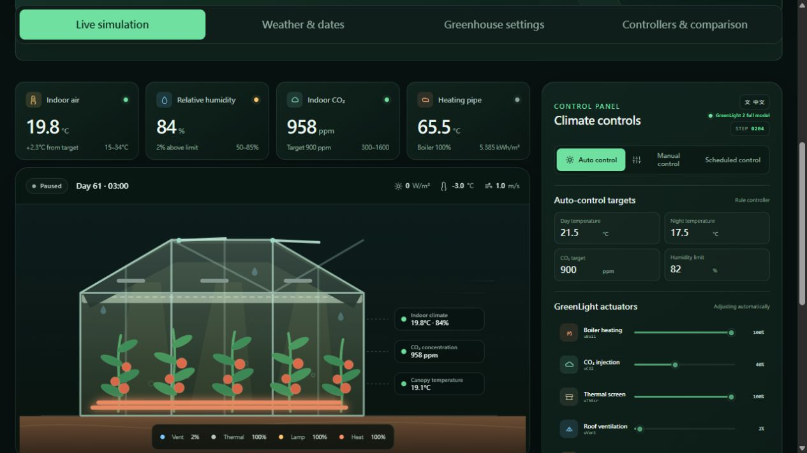

Publish a dashboard cover for internship reviewers
Request
The user requested an actual simulator screenshot as the GitHub introduction, so people reviewing internship applications can immediately see the project.
Changes and decisions
Captured the English live dashboard during a full GreenLight-Gym2 run using the previously authorized Amsterdam weather input. The image shows climate readings, the greenhouse illustration and equipment controls.
Saved the 76,655-byte JPEG as docs/images/greenhouse-dashboard.jpg. A temporary, loopback-only export form wrote this one new file inside the simulator repository through an approved local process. Temporary files stayed in the ignored .runtime directory.
Placed the image near the top of README.md, with a short English description of the workflow and the project's Python/JavaScript integration contribution. The caption identifies the screenshot as a model run and the drawing as illustrative.
Confirmed origin/main is an ancestor of the current branch. Promoting the current dashboard and cover to the default branch was blocked by automatic approval review because this request did not explicitly authorize updating main. Publication proceeds on the existing feature branch; main requires the user's confirmation.

Review and validation
This change affects documentation and a screenshot only; it does not change the simulator code or model. Additional code review and test suites were therefore skipped. The earlier dashboard implementation already completed its bounded review and checks. The saved JPEG was opened and visually inspected, the README image path was checked, and Git whitespace checks are performed before publication. The screenshot contains only the simulator interface.
Scope and cleanup
All new files are inside Greenlight-simulation. Protected practice repositories were not modified. Python ran with bytecode disabled and all cache/log paths inside this project. The temporary simulator and export process are stopped after capture.
Git
This work is committed on codex/scheduled-control-comparison and published to that branch using an ordinary push. Main remains unchanged pending explicit confirmation. No history rewriting is used. The remote commit ID and public README are checked after the push.